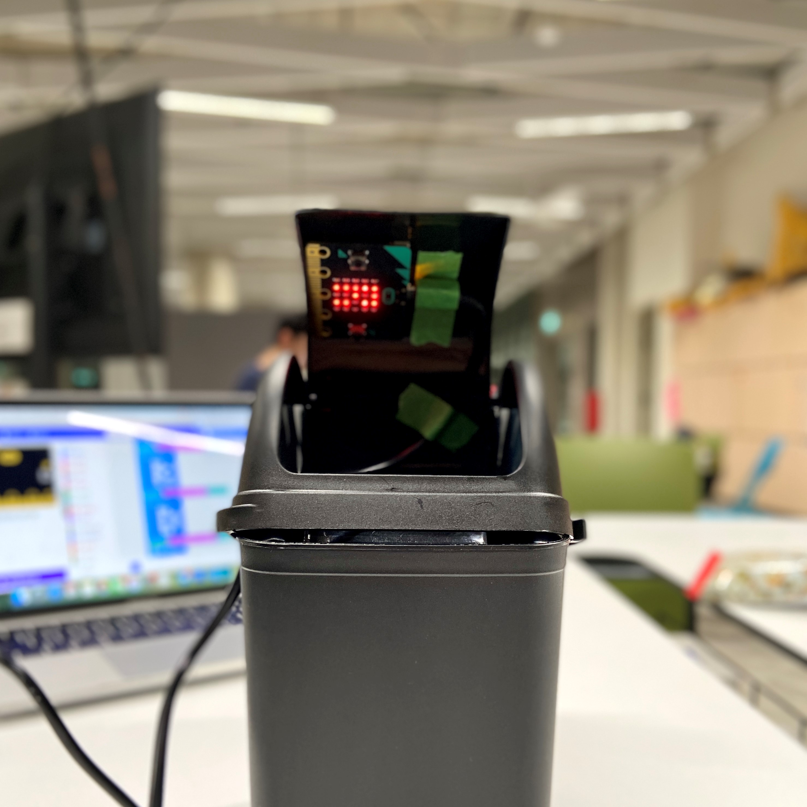

Week 1
Here are our profile pages which will tell you about our strengths and weaknesses in design.

Week 2
In week 2 we settled down on what object we want to do, a dustbin. To motivate and encourage less wastage. To evoke a sense of humour. To show that, every object has 'feelings' so care for them.
| row 1 |
| row2 |
| row3 |